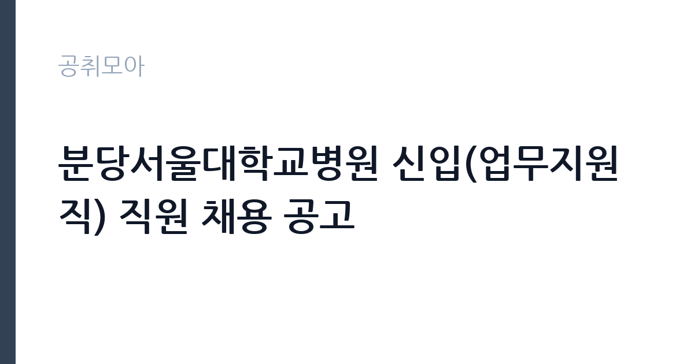

[공공기관] 분당서울대학교병원 신입(업무지원직) 직원 채용 공고
분당서울대학교병원 · 경기 · 마감 2026-11-02 (D-11) · 출처 잡알리오

한눈에 보는 모집 조건
| 기관 | 분당서울대학교병원 |
|---|---|
| 공고명 | 분당서울대학교병원 신입(업무지원직) 직원 채용 공고 |
| 고용형태 | 정규직 |
| 근무지 | 경기 |
| 게시일 | 2026-10-23 |
| 마감일 | 2026-11-02 (D-11) |
지원자격, 이렇게 읽으세요
- 공공기관 채용공시
- 세부 조건은 원문 공고문 확인
정규직 채용은 기간의 정함이 없는 근로계약을 전제로 합니다. 수습 기간을 두고 평가한 뒤 정규직으로 확정하는 절차가 일반적이며 기관의 인사 규정과 임금 체계를 적용받습니다. 이번 공고는 분당서울대학교병원에서 직접 진행하는 자체 전형으로, 응시자격과 제출서류는 공고문에 항목별로 제시됩니다. 응시 자격은 공고문의 모집분야별 요건을 기준으로 판단해야 합니다. 같은 공고 안에서도 직무에 따라 학력·전공·경력 요건이 다르게 적용되므로, 본인이 지원할 분야의 요건을 정확히 확인하십시오. 경력은 증명서로 입증해야 하고, 자격증 사본과 졸업증명서가 기본 제출서류로 붙습니다. 우대 사항은 가점으로 반영되므로 해당 여부를 확인해 증빙을 첨부해야 합니다. 결격사유 조회와 신원 확인 절차가 공통으로 적용됩니다. 서류는 접수 마감 이후 보완이 되지 않으므로 자격 요건과 증빙 서류를 마감 전에 모두 갖춰야 합니다. 공고문에 명시된 우대 사항은 해당 여부를 확인해 증빙을 첨부해야 가점이 반영됩니다. 학력이나 전공 요건이 없는 공고라도 제출서류 목록은 그대로 적용되므로 서류 준비 부담은 줄지 않습니다.
이 공고의 포인트
이 공고의 첫 번째 포인트는 고용 형태입니다. 수습 기간 평가를 통과하면 기간의 정함이 없는 신분이 되어 고용이 안정됩니다. 두 번째는 업무 범위가 명확하다는 점입니다. 일반 사무·운영 직무로 채용되므로 배치 이후 담당 업무가 크게 흔들리지 않습니다. 세 번째는 근무지입니다. 경기 지역 근무로 접근성은 좋지만 그만큼 지원자가 몰리는 지역이므로 경쟁률을 넉넉히 잡아야 합니다. 공고가 올라온 지 얼마 되지 않아 아직 지원자 수가 많지 않을 가능성이 있습니다. 같은 직무로 함께 올라온 공고 11건 가운데 마감이 중간에 위치하므로 다른 공고와 일정이 겹치는지 확인하십시오. 선발 인원은 공고문에 명시되어 있으니 모집분야 항목을 함께 확인하십시오.
전형은 어떻게 진행되나
1차 서류, 2차 면접의 2단계로 진행되는 구성이 일반적입니다. 서류에서는 자격 요건과 경력 증빙을 확인하고, 면접에서는 실제 업무 수행 능력과 조직 적응을 봅니다. 직무에 따라 필기시험이나 실기, 컴퓨터 활용 시험이 추가되기도 하므로 공고문의 전형표를 먼저 확인하십시오. 단계별로 합격자만 다음 전형에 응시할 수 있고, 단계마다 응시 자격 확인 서류를 다시 제출해야 하는 경우가 있습니다. 최종합격자 발표 후에는 신원조회와 채용 신체검사가 남아 있습니다. 서류 단계에서 요건을 충족하지 못하면 이후 전형을 준비할 기회가 없으므로, 제출 전 요건 대조를 한 번 더 하는 것이 좋습니다.
원문에서 확인한 전형 방식
<응시자격> 1. 근무부서, 인원 및 응시요건 - 모집분야 : 병동 - 모집인원 : 50명 - 응시요건 : [필수] 의료기관 또는 기업체(기관, 단체 포함) 근무경험 6개월 이상인 자 ※ 시차출퇴근, 교대근무 가능자에 한하며, 근무형태 및 시간은 병원사정에 따라 변경될 수 있음 ※ 최종합격자는 인사관리 상 지원직무 외 타 직무에서 근무할 수 있음 ※ 업무지원직은 정규직으로 3개월간의 수습기간을 두며, 1차 평가 점수 60점 이상인 경우 수습기간이 종료되고, 미달한 경우 추가 2개월간(총 5개월간)의 수습기간을 거쳐 2차 평가결과 60점 이상은 수습기간 종료, 60점 미만인 경우 임용취소 또는 근로계약이 해지될 수 있음. 수습기간은 근속기간에 포함되며 평가기간은 수습기간 중 일부로 함. ※ 자세한 사항은 우리 병원 채용홈페이지 참조(https://snubh.recruiter.co.kr)
이런 분께 추천해요
- 공고 모집분야의 요건을 충족하는 분
- 사무와 현장 업무를 함께 수행할 수 있는 분
- 부서 배치와 업무 조정을 수용할 수 있는 분
지원 전 체크리스트
- 응시자격 요건과 경력 기준을 충족하는가 — 경력은 증명서로 입증해야 합니다
- 수습 기간과 정규직 전환 조건을 확인했는가
- 제출서류 목록을 모두 준비했는가 — 누락 시 서류 단계에서 탈락합니다
- 접수 마감 2026-11-02 이전에 접수 방식을 확인해 제출했는가
모집 일정과 제출 타이밍
2026-10-23에 공고가 올라왔고 접수는 2026-11-02까지입니다. 남은 기간은 10일이며, 이 기간에 자격증 사본과 경력증명서, 주민등록등본 같은 기본 서류를 모두 준비해야 합니다. 경력증명서는 발급에 며칠이 걸리는 경우가 있으니 가장 먼저 신청하십시오. 접수는 온라인과 우편·방문으로 나뉘는 경우가 많고, 우편 접수는 도착 기준으로 판정되므로 마감일 소인만 믿으면 안 됩니다. 면접 일정은 서류 발표 후 개별 통보되므로 제출 후에도 연락을 받을 수 있도록 유지해야 합니다. 마감 이후에는 어떤 사유로도 접수가 인정되지 않으므로 하루 전 제출을 목표로 하십시오. 경기 지역 근무지는 사업소나 시설이 외곽에 있는 경우가 많아 차량 통근 가능 여부를 확인해야 합니다. 마감까지 2주 안팎이 있어 준비할 시간은 있지만 미루면 촉박해집니다. 선발 인원은 공고문의 모집분야 항목에 직종별로 제시되어 있습니다.
직무 이해하기: 공공기관
교육기관은 학교 교육과 교원 연수, 교육 행정을 담당합니다. 교육청은 관내 학교를 지원하고, 대학은 학사와 연구, 학생 지원 업무를 운영합니다. 예산과 인사 규정이 교육부 지침과 자체 규정을 함께 따르므로 절차가 엄격합니다. 이 공고는 제목에 직무가 구체적으로 드러나지 않아 모집분야 항목으로 업무를 확인해야 합니다. 일반적으로는 부서에 배치되어 사무 업무와 현장 지원 업무를 함께 맡습니다. 사무 쪽은 문서 작성과 자료 정리, 예산 집행 보조, 민원 응대가 중심이고, 현장 쪽은 시설 확인과 운영 지원, 행사 준비가 중심입니다. 배치 부서에 따라 업무 비중이 크게 달라지므로 면접에서 희망 분야를 밝히는 것이 좋습니다. 구체적인 직무 내용은 공고문의 모집분야 또는 직무기술서에서 확인하십시오. 업무는 혼자 처리하기보다 부서 단위로 나눠 진행되므로 담당 구역과 협업 범위를 입사 초에 확인하는 것이 중요합니다. 직무 교육은 입사 후 기관 자체 계획에 따라 진행되므로 사전 경험이 없어도 시작할 수 있습니다.
자기소개서 작성 팁
지원서는 모집분야를 명확히 밝히고 그 분야에 맞는 경험을 앞세우는 것이 중요합니다. 사무직을 지원한다면 문서 작성과 데이터 정리 경험을, 운영직을 지원한다면 현장 대응 경험을 중심에 두십시오. 기관의 사업을 조사해 어떤 부서에서 일하고 싶은지 구체적으로 쓰면 준비도가 드러납니다. 여러 분야에 두루 걸친 추상적인 서술은 피하십시오. 구성은 지원 동기, 직무 경험, 기여 방안 순서가 무난합니다. 지원 동기는 분당서울대학교병원의 사업 중 본인이 관심을 가진 부분을 한 가지로 좁혀 서술하고 추상적인 표현은 줄이십시오. 직무 경험은 담당했던 업무와 규모, 결과를 수치로 제시하면 설득력이 올라갑니다. 기여 방안은 입사 후 첫 3개월과 1년 계획으로 나눠 쓰면 준비도가 드러납니다.
면접 준비 포인트
면접에서는 지원 분야에 대한 이해와 업무 처리 방식을 확인합니다. 여러 직무 중 왜 해당 분야를 선택했는지, 맡은 업무를 어떤 순서로 처리할지 묻습니다. 부서 이동이 가능한지에 대한 질문도 자주 나오므로 솔직하게 답하십시오. 사무 경험이 있다면 문서 작성과 엑셀 활용 사례를, 현장 경험이 있다면 안전 관리와 협업 사례를 준비하십시오. 답변은 상황, 판단, 조치의 순서로 정리하면 전달이 분명해집니다. 모르는 질문에는 모른다고 밝히고 확인 방법을 제시하는 편이 억지 답변보다 낫습니다. 마지막에는 근무 의사와 함께 2026-11-02 이후 일정에 언제든 응할 수 있다는 점을 전달하십시오. 면접 당일 신분증과 제출서류 원본을 요구하는 경우가 있으니 공고문의 준비물 목록을 확인하십시오.
급여·근무조건 읽는 법
보수는 채용 신분과 기관 임금 규정에 따라 정해집니다. 공무직과 기간제는 기관 임금표를, 임기제공무원은 연봉등급제를 적용받습니다. 공고문에 금액이 제시되지 않은 경우에는 처우 항목이나 첨부된 보수표를 확인해야 합니다. 2026년 최저임금은 시급 10,320원, 월 환산 2,156,880원(209시간 기준)이므로 최소 기준선으로 삼으십시오. 수당과 상여 포함 여부에 따라 실수령액이 달라집니다. 2026년 적용 최저임금은 시급 10,320원, 월 환산 2,156,880원(주 40시간·209시간 기준)입니다. 고용노동부 고시 제2025-47호로 확정된 금액입니다. 보수는 보통 기본급, 각종 수당, 상여로 나뉘어 지급됩니다. 기본급만 보면 적어 보여도 정액급식비와 명절휴가비, 복지포인트가 붙으면 실제 총액이 달라지므로 항목별로 확인해야 합니다. 4대 보험과 퇴직급여 적용 여부도 함께 보십시오. 기간제는 계약 기간이 짧아 월 급여가 높아도 연간 총액은 적을 수 있습니다.
자주 묻는 질문
- 선발 인원은 몇 명인가요?
공고문의 모집분야 항목에 직종별 인원이 표로 제시되어 있습니다. 첨부된 공고문 원문에서 확인하십시오. - 근무지는 어디인가요?
경기 지역의 분당서울대학교병원 소속 근무지입니다. 세부 주소와 출퇴근 조건은 원문 공고문에서 확인할 수 있습니다. - 보수는 얼마인가요?
채용 신분(정규직)과 기관 임금 규정에 따라 정해지며 구체적인 금액은 공고문 처우 항목에 제시됩니다. 금액이 공개되지 않은 경우에는 원문의 보수표를 확인하십시오.
함께 보면 좋은 공고
[공공기관] 계약직(보건직,행정직,연구직,시설직) 공개채용 모집 공고 — 마감 2026-11-06[공공기관] (거창적십자병원) 초단시간 근로자 보건직 물리치료사 1차 채용 — 마감 2026-11-08[공공기관] [제2026-121호] 2026년도 제5차 전남광주통합특별시광주장애아동·발달장애인지원센터 (장애아동지원팀)체험형 청년인턴(장애인 제한경쟁) 채용 공고 — 마감 2026-11-06출처: 잡알리오 공개정보를 바탕으로 공취모아가 정리한 안내글입니다. 모집 조건·일정은 변경될 수 있으니 지원 전 반드시 원문 공고문을 확인하세요. 본 글은 정보 제공용이며 합격을 보장하지 않습니다.